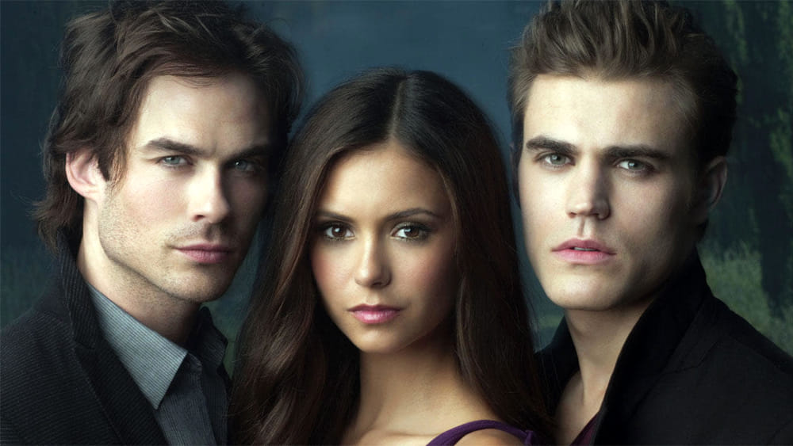

The Vampire Diaries
The Vampire Diaries (también conocida como Diarios de vampiros en Hispanoamérica y Crónicas vampíricas en España) es una serie de televisión estadounidense de género dramático, creada por Kevin Williamson y basada en la saga de L. J. Smith.
La historia se sitúa en el pueblo de Mystic Falls, Virginia. Mientras los protagonistas tratan de sobrevivir a las constantes criaturas y amenazas de diferentes especies, enemigos o antiguos aliados. La serie presenta diferentes criaturas sobrenaturales a través de sus ocho temporadas, incluyendo Vampiros, Brujas, Hombres Lobos, Doppelgängers, Híbridos, Vampiros Originales, Herejes o Sirenas.
The Vampire Diaries fue estrenada en el canal The CW el 10 de septiembre del año 2009 con su primera temporada, y el último episodio fue emitido el 10 de marzo de 2017 dándole fin a la octava y última temporada.
La primera temporada comienza después del terrible accidente que mató a los padres de Elena Gilbert (Nina Dobrev), una adolescente de 17 años que vive en Mystic Falls, una ciudad de Virginia, y que intenta seguir adelante con su vida, sin imaginarse que conocerá a un nuevo, guapo y misterioso estudiante, llamado Stefan Salvatore (Paul Wesley), quien esconde un secreto que muy pronto será descubierto con la llegada de su hermano Damon Salvatore (Ian Somerhalder). Elena y los habitantes de Mystic Falls se ven envueltos entre seres sobrenaturales: Vampiros, Brujas, Hombre lobo, híbridos, entre otros. La segunda temporada se centra principalmente en la llegada de la réplica de Elena, Katherine Pierce, y las razones de por qué regresó a Mystic Falls (para encontrar la piedra lunar y romper la maldición de los hombres lobo que sólo se pueden transformar en luna llena sin su voluntad). También se introducen los hombres lobo. El tío de Tyler, Mason Lockwood, un hombre lobo, llega a la ciudad después de la muerte de su hermano, y le habla a Tyler sobre la llamada «maldición Lockwood» que tiene su familia desde hace siglos. También hay nuevos vampiros, como Caroline, quien es convertida por Katherine (ya que ella tenía la sangre de Damon en su sistema y Katherine la asesina). Se revela que Elena no es la única réplica Petrova. Elena tiene que ser sacrificada para romper la maldición de Klaus, quien es el mayor vampiro de la historia, y que ahora está tras ella. La serie fue renovada para una tercera temporada, que se estrenó el 15 de septiembre de 2011. Esta temporada contó con el ascenso de Klaus (Joseph Morgan) a personaje principal. El argumento de la temporada se centró en la historia de la familia de los vampiros Originales, además de revelarse el auténtico motivo por el que Klaus quería convertirse en híbrido y el por qué de querer a Stefan de su parte. La temporada contó con la incorporación de Claire Holt como Rebekah, una de los Originales que en el pasado tuvo una relación amorosa con Stefan; Jack Coleman como Bill Forbes, el padre de Caroline, que regresa a Mystic Falls para intentar ayudar a su hija; Persia White como Abby Bennet, la madre de Bonnie; Torrey DeVitto como Meredith Fell, una médica que se interesará mucho por la rapidez de recuperación de Alaric; y Alice Evans como Esther, la madre de los Originales; así como el regreso de Daniel Gillies como Elijah.